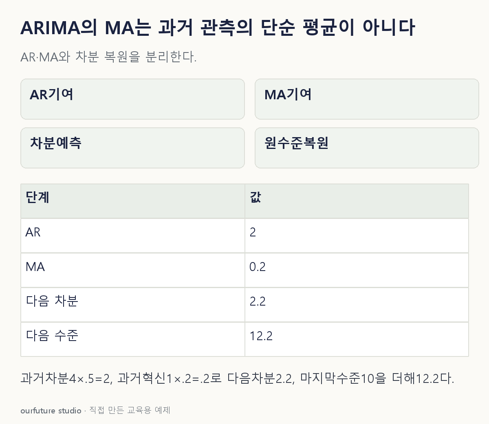

핵심 이론
비계절 ARIMA(p,d,q)에서 p는 자기회귀 차수, d는 차분 차수, q는 이동평균 오차 차수다. d=1이면 원계열 y가 아니라 wₜ=yₜ−yₜ₋₁을 대상으로 ARMA 구조를 다룬다. 차분은 추세 등 비정상 구조를 처리하는 선택이지만 한 번 하면 무조건 정상성이 생긴다는 보장은 없다.
AR은 과거 계열값을 이용하고 MA는 과거의 예측되지 않은 혁신 오차를 이용한다. MA라는 이름을 최근 며칠 관측값의 산술평균과 혼동하지 않는다. 예를 들어 wₜ=0.5wₜ₋₁+εₜ+0.2εₜ₋₁이라면 과거 차분값과 과거 오차가 각각 다른 항으로 들어간다. 오차 항의 부호 관례는 교재와 구현별 식을 확인한다.
미래 예측에서는 관측되지 않은 다음 혁신의 조건부 기대를 0으로 놓는 등 모형 조건을 사용한다. 학습 자료의 적합만으로 차수를 확정하지 않고 잔차와 시간 순서 검증을 본다. 이 글의 계수는 임의로 정한 교육용 모형이며 실제 수요 자료에 적합하거나 차수를 선정한 결과가 아니다.
작은 예제로 확인하기
wₜ=Δyₜ=0.5wₜ₋₁+εₜ+0.2εₜ₋₁을 가정한다. wₜ₋₁=4, εₜ₋₁=1, 다음 εₜ의 조건부 기대는 0이다.
| 항 | 예측 기여 |
|---|---|
| AR | 0.5×4=2 |
| 현재 혁신 기대 | 0 |
| MA | 0.2×1=0.2 |
다음 차분의 조건부 예측은 2.2다. 마지막 원계열 값이 10이면 원수준 예측은 12.2다.
그림으로 확인하기

직접 고르기
모형 wₜ=0.5wₜ₋₁+εₜ+0.2εₜ₋₁. w=Δy, 과거 w=4·ε=1, 다음 ε의 조건부 기대 0.
다음 차분의 조건부 예측은?
- 1. 0.2
- 2. 2.0
- 3. 2.2
- 4. 4.2
정답과 오답의 이유 확인하기
정답 3번 — 2.2
AR 기여 2와 MA 기여 0.2를 더한다. 예측 대상이 원수준이 아니라 차분이라는 조건도 유지한다.
- 1번: AR 항을 누락했다.
- 2번: 주어진 과거 혁신 오차의 MA 항을 누락했다.
- 4번: AR 계수 0.5를 적용하지 않았다.
조건 하나 바꾸어 풀기
이 모형에서 마지막 y가 10일 때 다음 원수준 y의 예측은?
풀이: 12.2.
1차 차분의 예측 2.2를 마지막 수준 10에 더한다. 차분 예측과 원계열 예측을 구별한다.
다시 떠올릴 단서
AR은 과거 값, I는 차분, MA는 과거 오차.
근거와 적용 조건
- statsmodels ARIMA — order(p,d,q)의 자기회귀·차분·이동평균 성분 및 모형 Notes. 확인일 2026-10-30.
상황·수치·보기·조건 변경은 자체 교육 예제다. 민간 복원 문항의 공식 정답이나 실제 성능·학습 효과를 뜻하지 않는다.
읽은 내용을 적용해 보기
지정 ARIMA(1,1,1)식과 부호, 한 단계 예측의 조건부 평균0 혁신을 가정한다. 실제 혁신은 추정해야 하며 모형 적합·차수 선택은 하지 않는다.